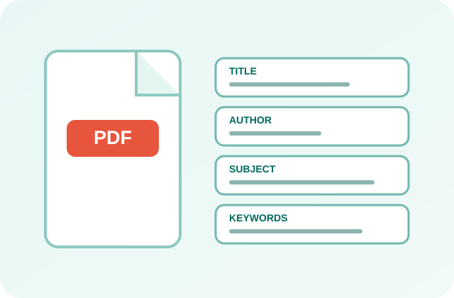

Change or remove a PDF’s title, author, keywords, dates and custom fields. The XMP copy is updated too, so every reader shows the same details.

A PDF metadata editor changes the hidden properties stored inside a PDF: title, author, subject, keywords, the apps that made it and its dates. PDFdukan reads every field, lets you rewrite or clear it, and saves a new copy in your browser without touching the pages.
PDFdukan also updates the XMP copy of these details, the second record many PDF readers check first. When we tested another free online editor, its saved file still carried the old title in XMP, so readers that check XMP showed the old title.
Title, Author, Subject, Keywords, Creator, Producer, Created and Modified dates, Trapped and Language.
See extra fields other apps added, such as Department, then edit, delete or add your own.
Show the title instead of the file name makes readers display your title in the window bar.
Remove all metadata empties every property and deletes the XMP packet before you share a file.
| Item | Details |
|---|---|
| Input | PDF, up to 200 MB each, 20 files at once |
| Output | Edited PDF, or a ZIP for several files |
| Records | Document info dictionary and XMP packet |
| Batch | Apply to all files copies shared fields |
| Locked PDFs | Restricted files open; password files need it |
Keep “Also update XMP metadata” ticked, so every reader shows the same title. For a batch, set author and keywords on one file, tap Apply to all files, then give each file its own title.
Edit properties before you sign a PDF. Any change to the file afterwards makes the digital signature show as invalid, and PDFdukan warns you when a file is signed.
No. PDFdukan edits the file with pdf-lib inside your browser tab, and restricted files are unlocked on your device with qpdf. Nothing is uploaded.
PDFdukan does not edit the text on the pages, file-system dates on your computer, or metadata inside images. A saved copy of a restricted PDF opens without its restrictions; use Unlock PDF to learn how those limits work.
Yes. The PDFdukan PDF metadata editor is free, needs no sign-up and adds no watermark. You can edit up to 20 PDFs at a time.
Usually the XMP copy still holds the old title. Save again with Also update XMP metadata ticked.
Yes. Pick a new Created or Modified date, or tap Now. This changes the date stored in the PDF, not the date your computer shows for the file.
No. Pages, fonts, images and links stay the same. Only the properties are rewritten, and the page count is checked after saving.
Clear the Author box, or tap Remove all metadata to empty every field and delete the XMP packet.
PDFdukan keeps the PDF/A label in the XMP packet and keeps both metadata copies in step. Run a validator if your archive requires proof.
Connect Google Drive to save selected outputs to your own Drive storage. Review the destination before uploading sensitive documents.
No account? Sign Up free